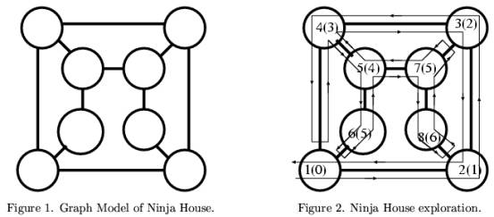

Home Page
F.A.Qs
Statistical Charts
Past Contests
Scheduled Contests
Award Contest
| Online Judge | Problem Set | Authors | Online Contests | User | ||||||
|---|---|---|---|---|---|---|---|---|---|---|
| Web Board Home Page F.A.Qs Statistical Charts | Current Contest Past Contests Scheduled Contests Award Contest | |||||||||
|
Language: Map of Ninja House
Description An old document says that a Ninja House in Kanazawa City was in fact a defensive fortress, which was designed like a maze. Its rooms were connected by hidden doors in a complicated manner, so that any invader would become lost. Each room has at least two doors.
The Ninja House can be modeled by a graph, as shown in Figure 1. A circle represents a room. Each line connecting two circles represents a door between two rooms.  I decided to draw a map, since no map was available. Your mission is to help me draw a map from the record of my exploration. I started exploring by entering a single entrance that was open to the outside. The path I walked is schematically shown in Figure 2, by a line with arrows. The rules for moving between rooms are described below. After entering a room, I first open the rightmost door and move to the next room. However, if the next room has already been visited, I close the door without entering, and open the next rightmost door, and so on. When I have inspected all the doors of a room, I go back through the door I used to enter the room. I have a counter with me to memorize the distance from the first room. The counter is incremented when I enter a new room, and decremented when I go back from a room. In Figure 2, each number in parentheses is the value of the counter when I have entered the room, i.e., the distance from the first room. In contrast, the numbers not in parentheses represent the order of my visit. I take a record of my exploration. Every time I open a door, I record a single number, according to the following rules. 1. If the opposite side of the door is a new room, I record the number of doors in that room, which is a positive number. 2. If it is an already visited room, say R, I record "the distance of R from the first room" minus "the distance of the current room from the first room", which is a negative number. In the example shown in Figure 2, as the first room has three doors connecting other rooms, I initially record "3". Then when I move to the second, third, and fourth rooms, which all have three doors, I append "3 3 3" to the record. When I skip the entry from the fOurth room to the first room, the distance difference "-3" (minus three) will be appended, and so on. So, when I finish this exploration, its record is a sequence of numbers "3 3 3 3 -3 3 2 -5 3 2 -5 -3". There are several dozens of Ninja Houses in the city. Given a sequence of numbers for each of these houses, you should produce a graph for each house. Input The first line of the input is a single integer n, indicating the number of records of Ninja Houses I have visited. You can assume that n is less than 100. Each of the following n records consists of numbers recorded on one exploration and a zero as a terminator. Each record consists of one or more lines whose lengths are less than 1000 characters. Each number is delimited by a space or a newline. You can assume that the number of rooms for each Ninja House is less than 100, and the number of doors in each room is less than 100. Output For each Ninja House of m rooms, the output should consist of m lines. The i-th line of each such m lines should look as follows:
i r(1) r(2)... r(ki), where r(1),... , r(ki), should be rooms adjoining room i, and ki should be the number of doors in room i. Numbers should be separated by exactly one space character. The rooms should be numbered from 1 in visited order. r(1), r(2),..., r(ki), should be in ascending order. Note that the room i may be connected to another room through more than one door. In this case, that room number should appear in r(1),...,r(ki), as many times as it is connected by different doors. Sample Input 2 3 3 3 3 -3 3 2 -5 3 2 -5 -3 0 3 5 4 -2 4 -3 -2 -2 -1 0 Sample Output 1 2 4 6 2 1 3 8 3 2 4 7 4 1 3 5 5 4 6 7 6 1 5 7 3 5 8 8 2 7 1 2 3 4 2 1 3 3 4 4 3 1 2 2 4 4 1 2 2 3 Source |
[Submit] [Go Back] [Status] [Discuss]
All Rights Reserved 2003-2013 Ying Fuchen,Xu Pengcheng,Xie Di
Any problem, Please Contact Administrator